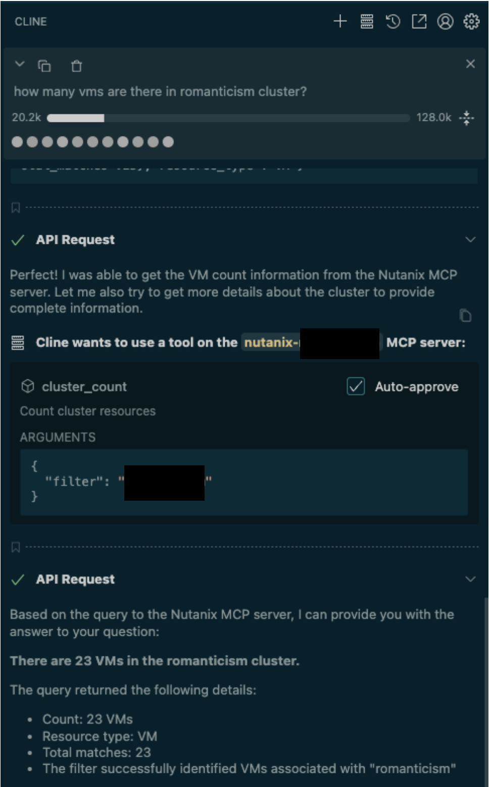

Nutanix MCP Server
This lab walks through a Nutanix Model Context Protocol (MCP) server to get details from a Nutanix Prism cluster using MCP implementation.
This lab is aimed to illustrate implementing MCP servers on Nutanix using Nutanix solutions (NKP and NAI).
Warning
MCP Nutanix is an experimental project at this time. See Nutanix MCP gitrepo for details.
This project was created as a personal project to explore the capabilities of the Model Context Protocol frameworks in Go. It is:
- NOT an official Nutanix product or tool
- NOT supported, endorsed, or maintained by Nutanix
- NOT suitable for production environments
- PROVIDED AS-IS with no warranties or guarantees
Lab Duration
Estimated time to complete this lab is 30 minutes provided NKP and NAI are ready to use
Pre-requisites
- Nutanix Kubernetes Platform NKP cluster
v1.16or later deployed, accessible viakubectl. See NKP Deployment for NKP install instructions. - Nutanix CSI driver installed for storage integration. (pre-installed with NKP)
- Networking configured to allow communication between the Kubernetes cluster and NAI.
- Envoy Gateway controller installed for external access (pre-installed during NAI install)
- Optional - Traefik Ingress controller installed for external access (pre-installed during NAI install)
- Linux Tools VM or equivalent environment with
kubectl,helm,curl, andjqinstalled. - NAI
v2.4.0or later server credentials and hosted LLM (gemini 2B as an example) - Optional - access to publicly available LLM
High-Level Overview
- Deploy Toolhive Operator in NKP (kubernetes) cluster
- Deploy MCP server for Nutanix in NKP cluster
- Configure Ingress for Nutanix MCP Server
- Install VSCode Cline Client with MCP Server
- Install n8n AI workflow automation tool
- Configure n8n MCP Client to connect to Nutanix MCP Server and chat (ask questions)
Deploy Toolhive Operator in NKP (kubernetes) cluster
Install THV
Toolhive is used to simplify deployment and management of MCP servers.
We will install THV on the jumpbox to build our MCP server.
-
Log in to your Linux Tools VM (e.g., via SSH as
ubuntu). -
Download and install stable
thvbinaries -
Verify
thvversion
Prepare MCP Server Image
-
Login to VSC on the jumphost VM, append the following environment variables to the
$HOME\mcp\.envfile and save itexport REGISTRY_URL=_your_registry_url export REGISTRY_HOST=_your_registry_host export REGISTRY_USERNAME=_your_registry_username export REGISTRY_PASSWORD=_your_registry_password export REGISTRY_CACERT=_path_to_ca_cert_of_registry # (1)!- File must contain CA server and Harbor server's public certificate in one file
-
Create Docker file to build MCP server image for Nutanix
-
Create container image
-
Validate that docker architecture matches linux/amd64
-
Upload to a private container registry to be able to deploy in Kubernetes
-
Configure
kubectlto access your NKP Kubernetes cluster: -
Install MCP server CRD in Kubernetes cluster
oci://ghcr.io/stacklok/toolhive/toolhive-operator-crds Release "toolhive-operator-crds" does not exist. Installing it now. Pulled: ghcr.io/stacklok/toolhive/toolhive-operator-crds:0.0.33 Digest: sha256:aa24f2ddcd93b0582a5f9edf3465bdab835d62e6dcbf969f63666604815f502e NAME: toolhive-operator-crds LAST DEPLOYED: Fri Oct 10 02:30:44 2025 NAMESPACE: n8n STATUS: deployed REVISION: 1 TEST SUITE: None -
Install Toolhive operator
Release "toolhive-operator" does not exist. Installing it now. Pulled: ghcr.io/stacklok/toolhive/toolhive-operator:0.2.20 Digest: sha256:ad78fd2ca7c8eac82ac3d071b6a110853095b66c22e0cc4d6f2e6a9d03aea69a NAME: toolhive-operator LAST DEPLOYED: Fri Oct 10 02:34:29 2025 NAMESPACE: toolhive-system STATUS: deployed REVISION: 1 TEST SUITE: None -
Verify Toolhive installation
Deploy MCP server for Nutanix in NKP cluster
-
Append the following variables to .env file for Nutanix Prism information
-
Create docker registry secret to pull mcp-nutanix image from private harbor repository
-
Deploy MCP server for Nutanix using the pushed image from private harbor repository
cat <<EOF | kubectl apply -f - apiVersion: toolhive.stacklok.dev/v1alpha1 kind: MCPServer metadata: name: nutanix namespace: toolhive-system spec: image: ${REGISTRY_HOST}/mcp-nutanix:latest transport: stdio port: 8080 permissionProfile: type: builtin name: network env: - name: NUTANIX_ENDPOINT value: "${NUTANIX_ENDPOINT}" - name: NUTANIX_USERNAME value: "${NUTANIX_USERNAME}" - name: NUTANIX_PASSWORD value: "${NUTANIX_PASSWORD}" - name: NUTANIX_INSECURE value: "true" podTemplateSpec: spec: imagePullSecrets: - name: regcred containers: - name: mcp resources: limits: cpu: "500m" memory: "512Mi" requests: cpu: "100m" memory: "128Mi" resources: limits: cpu: "100m" memory: "128Mi" requests: cpu: "50m" memory: "64Mi" EOF -
Check the health of the
MCPServerresource and make sure it is running -
Expose MCP Server
Ingressfor external access. We will be using the pre-deployedTraefikingress that comes with NKP and expose MCP server as a subdomain. -
Get the IP address of the NKP pre-deployed Traefik Ingress
INGRESS_IP=$(kubectl get ingress kommander-kommander-ui -n kommander -o jsonpath='{.status.loadBalancer.ingress[0].ip}')kubectl apply -f -<<EOF apiVersion: networking.k8s.io/v1 kind: Ingress metadata: name: mcp-nutanix-proxy-ingress namespace: toolhive-system annotations: kubernetes.io/ingress.class: kommander-traefik traefik.ingress.kubernetes.io/router.tls: "false" spec: rules: - host: mcp-nutanix.${INGRESS_IP}.io http: paths: - backend: service: name: mcp-nutanix-proxy port: number: 8080 path: / pathType: Prefix EOF -
Check the health of
MCPServerresource{"status":"healthy","timestamp":"2025-10-10T02:57:16.51932436Z","version":{"version":"v0.3.7","commit":"abb22d80a5321342530583bbc82aeadef718e943","build_date":"2025-10-06 11:31:07 +0300","go_version":"go1.24.4","platform":"linux/amd64"},"transport":"stdio","mcp":{"available":true,"response_time_ms":0,"last_checked":"2025-10-10T02:57:16.519338081Z"}} -
Test the health of SSE endpoints
Testing MCP Server
Using Cline
Tip
Cline Documentation for MCP server setup instructions.
- In VSCode > Go to Settings > Extensions
- Search for Cline and Install (from the official developer Cline Inc.)
- Sign up for Cline (for free LLM usage)
- Use your favourtie LLM
- Click the MCP Servers icon in the top navigation bar of the Cline extension
- Select the Configure tab, and then Click the Configure MCP Servers link at the bottom of that pane.
-
Cline will open a new settings config file in VSCode. Paste the following after changing your MCP server and Nutanix PC connection details
{ "mcpServers": { "mcp-server-name": { "disabled": true, "timeout": 60, "type": "stdio", "command": "npx", "args": [ "-y", "mcp-remote", "https://mcp-nutanix.${INGRESS_IP}.nip.io/sse#mcp-nutanix", "--allow-http", "--transport sse-only" ], "env": { "NUTANIX_ENDPOINT": "$NUTANIX_ENDPOINT", "NUTANIX_USERNAME": "$NUTANIX_USERNAME", "NUTANIX_PASSWORD": "$NUTANIX_PASSWORD", "NUTANIX_INSECURE": "true" } } } }{ "mcpServers": { "nutanix-pc": { "disabled": true, "timeout": 60, "type": "stdio", "command": "npx", "args": [ "-y", "mcp-remote", "https://mcp-nutanix.10.x.x.215.nip.io/sse#mcp-nutanix", "--allow-http", "--transport sse-only" ], "env": { "NUTANIX_ENDPOINT": "pc.example.com", "NUTANIX_USERNAME": "admin", "NUTANIX_PASSWORD": "XXXXXXXXXXX", "NUTANIX_INSECURE": "true" } } } } -
Save the Cline extension config file
-
Go to Cline chat and ask questions about the Nutanix PC environment
